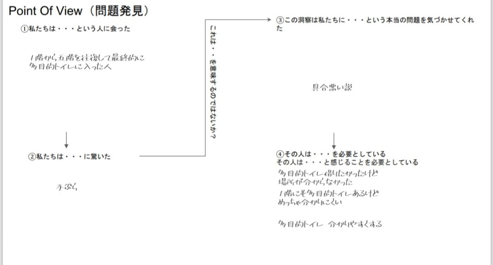
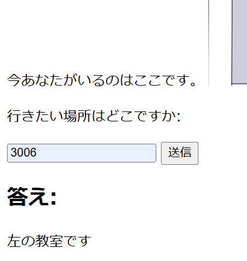
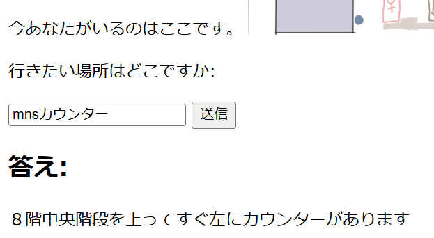
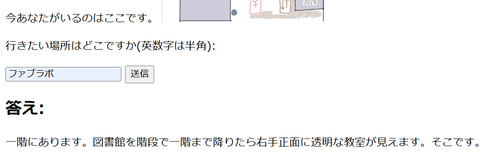

新神奈川大学マップ 作：るーさん
私たちが今回焦点を当てたのは1-5階までを行き来していたおじさん
についてです。

このようにわたしはこのおじさんを不審者ではなくトイレ探してたおじさんと仮定して考えました。
そして私が今回つくったのはこれです！！！
説明
じつはこれまだ未完成で、本来ならばこのウェブページをアップして、ＱＲコード化してそれを教室の前に貼るということを想定していましたが時間がなくてできませんでした。ウェブページ自体はうまくできているので覗いてほしいです。
これは神奈川大学のマップがわからなかったおじさんがいると話をきき、
自分も初めは場所全くわからなかったのでもっと簡単なマップが欲しいとおもいつくりました。
やり方としては今あなたは３００７教室の扉の前のタブレットを見ていると仮定します。そこで３００７教室専用のＱＲコードを開くと

このように今いる場所を教えてくれます。
次に行きたい場所を打ちます。今回は隣の３００６教室と打ちます。すると

このようにでます
ほかにも個人的に迷ったふたつの場所をききます。


※今のところこの３つしか答えてくれません。